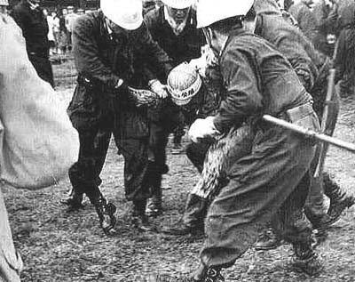
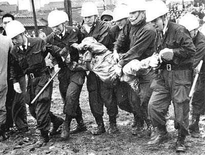

宮浦鉱強行就労事件
昭和35年4月20日、宮浦鉱前において、第二組合員入坑阻止の三池労組ピケ隊員を排除する警察部隊。 この時、宮浦鉱へ強行就労する第二組合員400人を1500人の警官が護衛した。
これら派遣警察官の中には、
「ピケ隊の中に オルグのわが兄がまじれることは 誰にも言わず」(博多署巡査)
という短歌で表わしているように、ピケ隊阻止の中で兄弟が対峙するという場面もあった。

（提供写真）

（提供写真）
BACK
NEXT